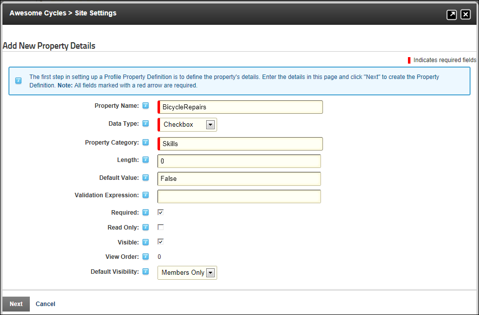
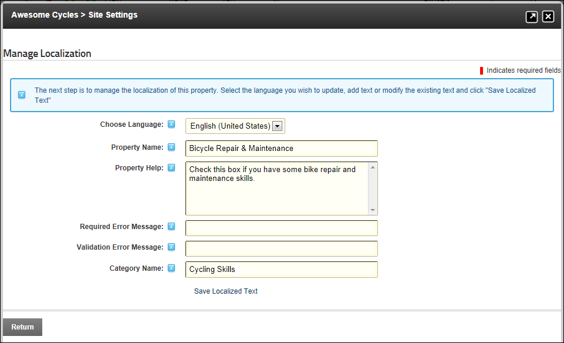
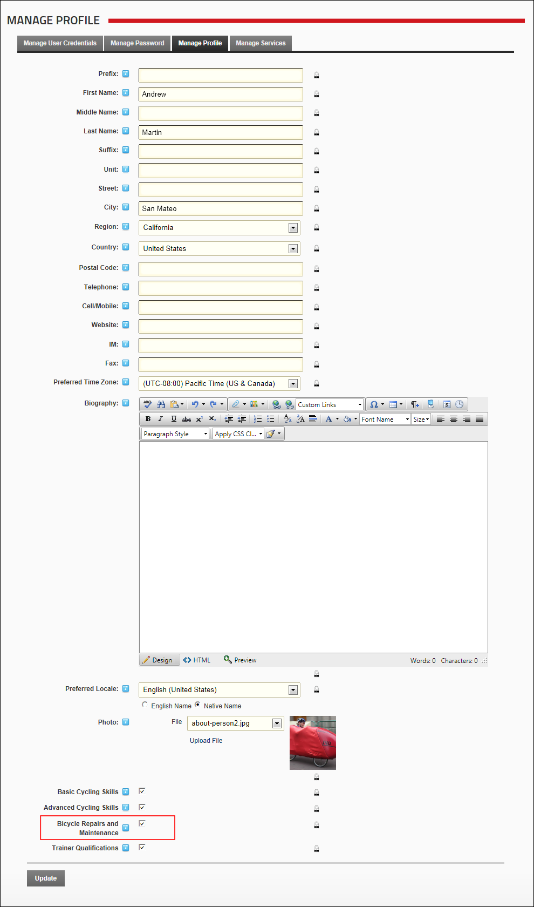

Adding a New Profile Property
How to add a new field to the Manage Profile page using the Site Settings page.
- Navigate to Admin >
 Site Settings.
Site Settings.
- Select the User Account Settings tab.
- Expand the Profile Settings section.
- Click the Add New Profile Property link.
- On the Add New Property Details page, complete the following fields.
- In the Property Name text box, enter a name for this property as it will appear on the Manage Profile page.
- At Data Type, select a data type from the following options: Checkbox, Date, DateTime, Country, List, Locale, Page, Region, RichText, TimeZone, Integer, Multi-line Text, Text, TrueFalse, Image, TimeZoneInfo and Unknown.
- In the Property Category text box, enter the category that this property belongs to. This determined where it is displayed in the profile. Pre-existing categories are: Name, Address, Contact Info, Preferences.
- Optional. In the Length text box, enter the maximum character length for this field. This is only relevant to fields where users enter information such as Text and RichText data types.
- Optional. In the Default Value text box, enter the default value for this field.
- Optional. In the Validation Expression text box, enter a regular expression to validate data entered into this field.
- Optional. At Required, select from these options:
- to set the field as required. Existing users will be required to complete this field the next time they login to the site.
- to set this field as optional. Users can choose to complete this field on their profile at any time.
- Optional. At Read Only, to set the field as editable by Administrators only. Other users can view this field but cannot edit it.
- Optional. At Visible, to set the field as visible in the User Accounts module - OR - to hide it.
- Optional. In the View Over text box, enter the view order for this property.
- At Default Visibility, select one of the following options to set the default visibility of this property:
- All Users: All users can view this property by default.
- Members Only: Only registered users can view this property by default.
- Admin Only: Only Administrators can view this property by default.
- Click the Next button. This saves this property information entered above and opens the Manage Localization page.

- On the Manage Localization page, complete these following fields:
- At Choose Language, select the language that this localized text will be used for from the drop down list.
- In the Property Name text box, enter a name for this field as it will appear on the profile page. Leave blank to use the Property Name entered at Step 6.
- In the Property Help text box, enter the text to display when the user mouses over the Help icon.
- In the Required Error Message text box, enter the error message.
- In the Validation Error Message text box, enter the validation error message.
- In the Category Name text box, enter an existing or new category for this field.

- If more than one language is enabled, then repeat Step 18 selecting a new language in Step 18a and then creating localized text each additional languages.

- Optional. Navigate to the Manage Profile page to see your changes.
